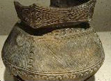

This permanent anthropological exhibit is dedicated to a former faculty member whose scholarly expertise celebrated the art of the original Americans. The exhibition explores the material cultures and artistic traditions of indigenous peoples of North America through art and artifacts from the Museum's collections. Drawing upon the unique breadth and strengths of the Fleming's collections, the exhibition features outstanding examples of Navajo textiles, Plains quillwork and beadwork, carvings from the northwest coast, pottery from the southwest, baskets from California and New England, and lithics from Vermont, among others. Highlights include: